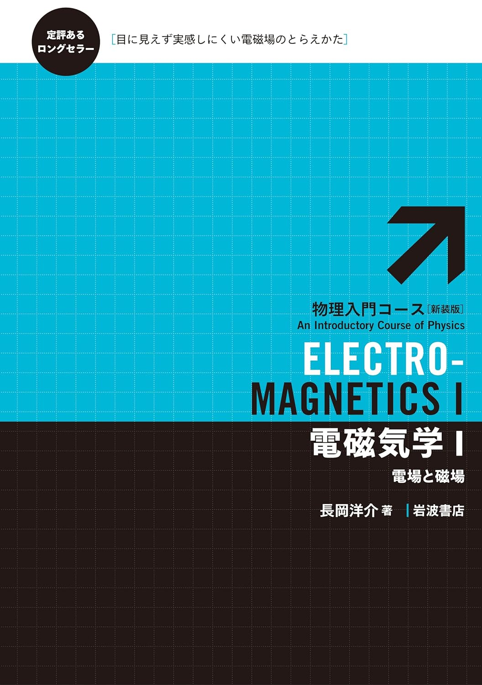
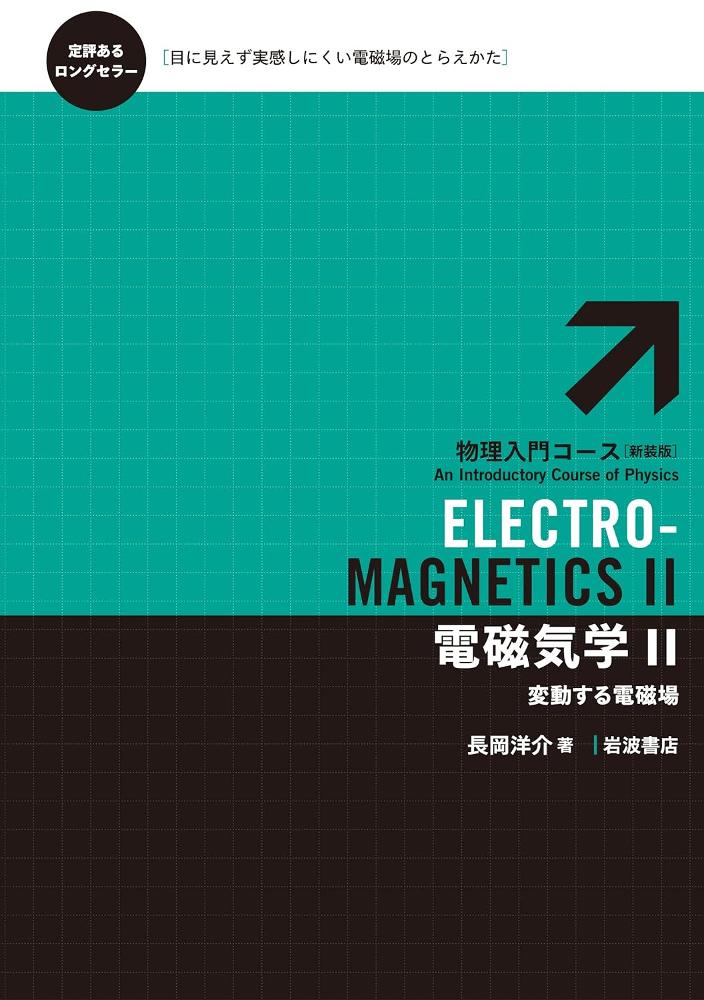

電磁気学
電磁気学のおすすめ参考書です。
理論電磁気学 砂川重信著
たくみが初めてゼミで使用した本。確かに電磁気学を勉強する1冊目として勧められる本では決してない。むしろ基本的なことを色々学んだあと、もう一度初心にかえる気持ちでこの本を読んでほしい。そうすれば「電磁気学はこんなに深かったのか」と驚くに違いない。マクスウェル方程式の時間反転対称性や相対論との関係など、テーマが非常に豊富な良書。

電磁気学I 電場と磁場 長岡洋介著
電磁気学の基本的な内容を一通り押さえたい人にはこの本がおススメ。電磁気学に必要なベクトル解析の知識もこの一冊の中で易しく解説してくれているため初学者にはとても読みやすい。電磁気学の典型問題も例題の中で完璧にさらってくれている。ありがとう、長岡先生。

電磁気学II 変動する電磁場 長岡洋介著
この本は電磁気学I(長岡著)の完全なる続き。第一巻で学んだ静電場や静磁場の知識を前提に変動する電磁場について扱う。電磁気学は時間変動してからが本番。いわゆる「マクスウェル方程式」の形で電磁気学の理論体系がまとめられるのもこの第二巻だ。ありがとう、長岡先生。